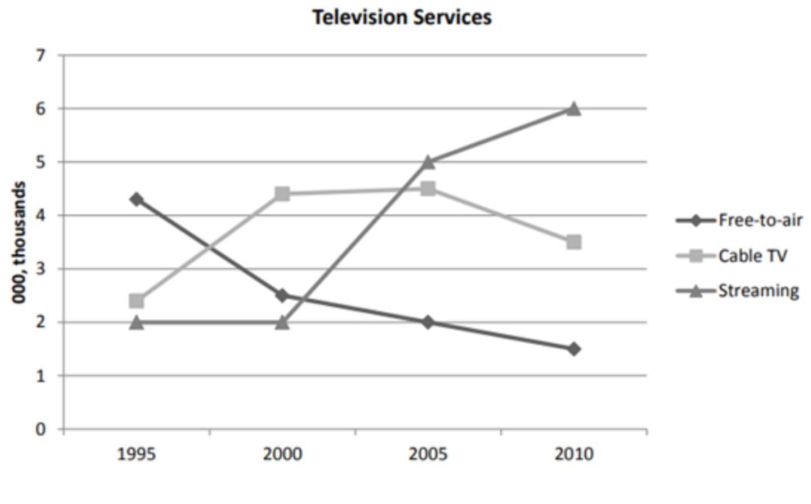

欢迎参加山东财经大学外国语学院雅思培训中心的定级测试。 接下来，我们将对你听力、阅读、写作、口语四方面进行综合评估。 请在下方输入您的姓名，准备好后点击NEXT开始测试。
你现在听到的是测试音频，请调节电脑音量到合适的大小。 当你准备好后，按NEXT开始听力测试。
Introduction: The Early History of Salt
- Salt is essential for human 31.
- The word 32. comes from the Latin word 'solarium argentum'.
- Animals were kept in the local 33. in Sweden.
- Fresh meat was only available in 34. at the right time of year.
- Salt has been used widely: we can tell from the diet of the 35. .
- 36. consumption increased rapidly because food was salty.
- People mainly extract salt from oceans and 37. water.
- Salt from spring water is more 38. and purer.
- Locals needed to protect the 39. in the basins.
- People carrying salt around were seen as a natural means of 40. .
Persistent Bullying
A Persistent bullying is one of the worst experiences a child can face...
Bullying can take a variety of forms, from the verbal - being taunted or called hurtful names...
B Bullying is clearly unpleasant, and can make the child experiencing it feel unworthy...
C Until recently, not much was known about the topic, and little help was available...
D More than half of all schools in the region are taking part in the Sheffield Anti-Bullying...
E What steps should schools take to reduce bullying? The most important step is for the school authorities to produce a policy...
F Effective work can also be done with individual pupils and small groups...
The most important step is for the school authorities to produce a (5) ...
as to how the school and its staff will react if bullying occurs (6) ...
For example, potential (7) of bullying can be trained...
Or again, in dealing with group bullying, a (8) approach...
recognise the difference between bullying and mere (9) .
The line graph below shows the number of users of three different kinds of television service...

您的笔试文本答案已下载！
【重要提示】：请不要关闭网页。您还需要参加最后一部分的口语定级测试。
请点击下方蓝色按钮，进入口语测试。